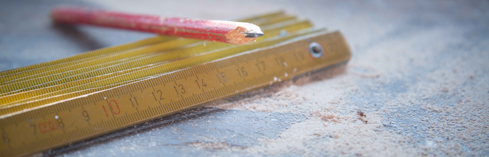

Convert any measurement you want from lenght to area, mass to temprature and anything...

The Meter in S.I System
The metre (British spelling and BIPM spelling) or meter (American spelling) (from the French unit mètre, from the Greek noun μέτρον, "measure") is the base unit of length in the International System of Units (SI). The SI unit symbol is m. The metre is defined as the length of the path travelled by light in vacuum in
(1/299 792 458)
of a second.
The metre was originally defined in 1793 as one ten-millionth of the distance from the equator to the North Pole – as a result the Earth's circumference is approximately 40,000 km today. In 1799, it was redefined in terms of a prototype metre bar (the actual bar used was changed in 1889). In 1960, the metre was redefined in terms of a certain number of wavelengths of a certain emission line of krypton-86. In 1983, the current definition was adopted...
The Metric System
The history of the metric system began in the Age of Enlightenment with simple notions of length and weight taken from natural ones, and decimal multiples and fractions of them. The system was so useful it became the standard of France and Europe in half a century. Other dimensions with unity ratios[Note 1] were added, and it went on to be adopted by the world.
The first practical realisation of the metric system came in 1799, during the French Revolution...
Traditional U.S Units
United States customary units are a system of measurements commonly used in the United States. The United States customary system (USCS or USC) developed from English units which were in use in the British Empire before the U.S. became an independent country. However, the United Kingdom's system of measures was overhauled in 1824 to create the imperial system, changing the definitions of some units. Therefore, while many U.S. units are essentially similar to their Imperial counterparts, there are significant differences between the systems.
The majority of U.S. customary units were redefined in terms of the meter and the kilogram with the Mendenhall Order of 1893 and, in practice, for many years before. These definitions were refined by the international yard and pound agreement of 1959...
The S.I System
International System of Units (SI), French Système Internationale d’Unités, international decimal system of weights and measures derived from and extending the metric system of units. Adopted by the 11th General Conference on Weights and Measures in 1960, it is abbreviated SI in all languages.
The International System of Units
Just as the original conception of the metric system had grown out of the problems scientists encountered in dealing with the medieval system...